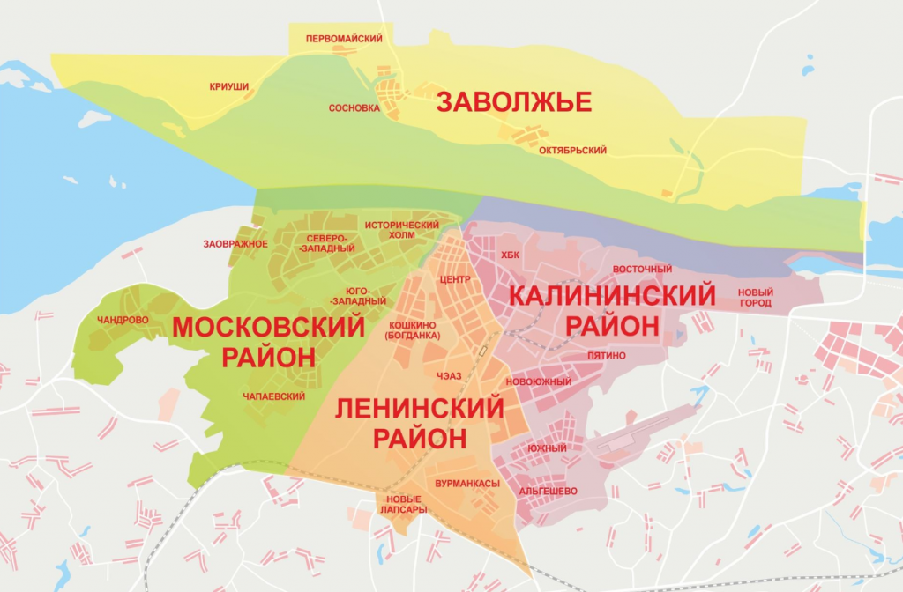
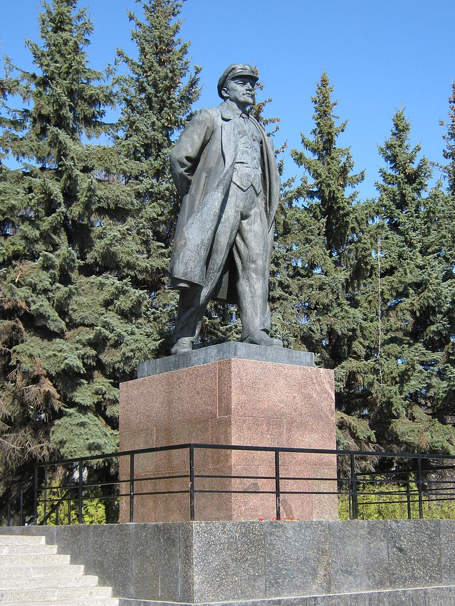

Нажмите на любой из районов города, чтобы узнать больше

Ленинский район - один из районов города Чебоксары.Типичный район столичного города, в котором доминирует непроизводственная сфера.
В своей основе охватывает центральную часть города от Красной площади по улице Карла Маркса и проспекту Ленина до Привокзальной площади, жилые районы по улице Богдана Хмельницкого, Хевешской улице, водораздельные холмы между реками: Сугутка, Трусиха и Малая Кувшинка.
